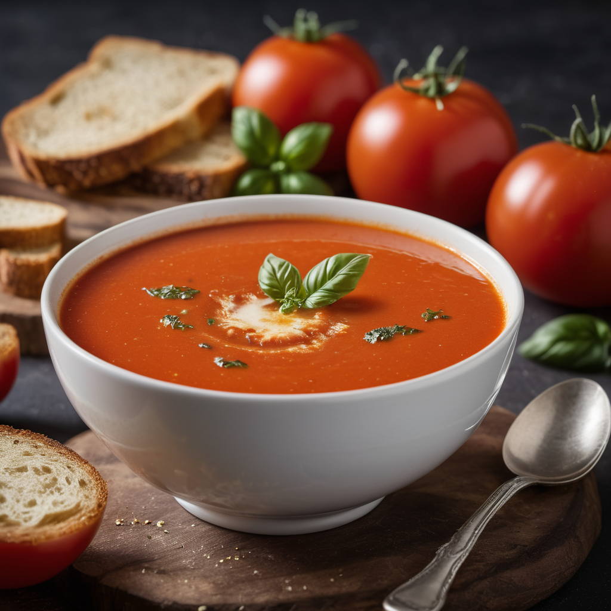

Hozzávalók:
- 2 ek olívaolaj vagy vaj
- 1 vöröshagyma, finomra vágva
- 2 gerezd fokhagyma, apróra vágva vagy zúzva
- 800 g paradicsom ,friss vagy konzerv, apróra vágva
- 4 csésze zöldség alaplé vagy víz
- 1 tkcukor opcionális, a paradicsom édességének kiemelésére
- 1 tk szárított bazsalikom
- 1 tk szárított oregánó
- Friss petrezselyem vagy snidling apróra vágva a tálaláshoz
- só
- bors
- Tejföl vagy tejszín a tálaláshoz
Elkészítés:
- Egy nagy lábasban melegítsük fel az olívaolajat vagy vajat közepes lángon.
- Adjuk hozzá a finomra vágott vöröshagymát, és pirítsuk meg, amíg üveges lesz, körülbelül 5 percig.
- Keverjük hozzá az apróra vágott fokhagymát, és pirítsuk további 1-2 percig, amíg illatos lesz.
- Adjuk hozzá a paradicsomot és az alaplevet vagy vizet. Ha konzerv paradicsomot használunk, öntsük bele a paradicsom konzervlevét is.
- Fűszerezzük a levest cukorral (ha használunk), szárított bazsalikommal, szárított oregánóval, sóval és frissen őrölt fekete borssal ízlés szerint.
- Forraljuk fel a levest, majd csökkentsük a hőt, és főzzük további 15-20 percig, hogy az ízek összeérjenek, és a leves kissé besűrűsödjön.
- Ha túl sűrűnek találjuk a levest, hígítsuk vízzel vagy alaplével.
- Amikor a leves elkészült, vegyük le a tűzről, és ha kívánjuk, turmixoljuk simára botmixerrel vagy állítsuk be a leves állagát.
- Tálaláskor szórjuk meg friss bazsalikommal vagy petrezselyemmel, és kínáljuk tejföllel vagy tejszínnel a tetején.